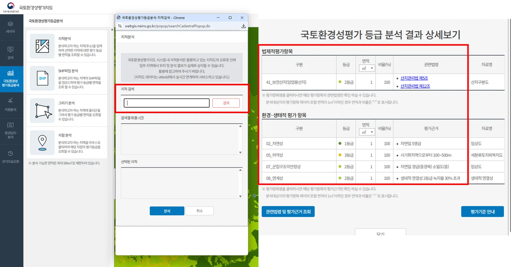
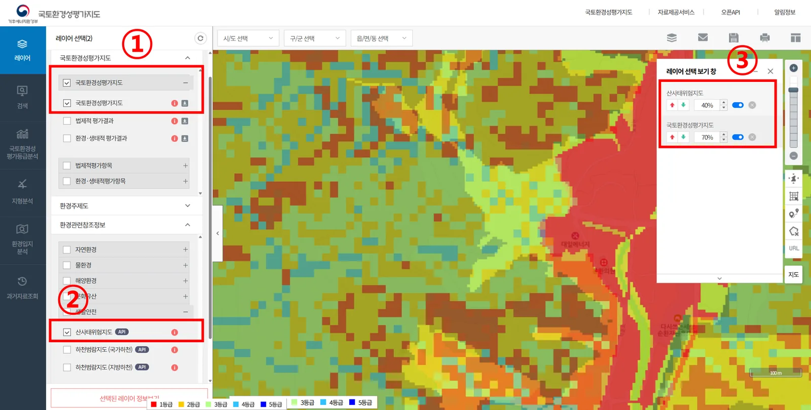
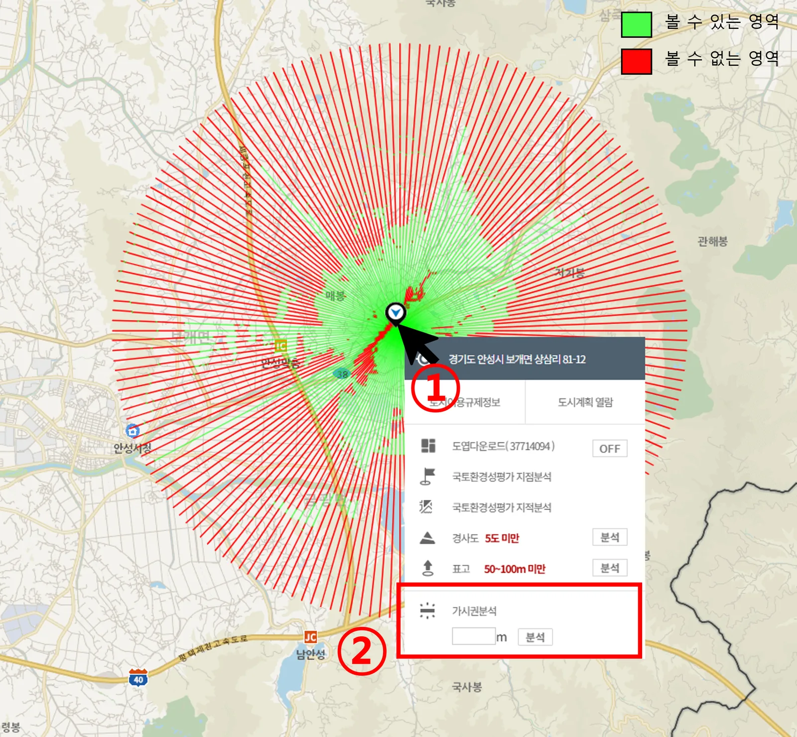
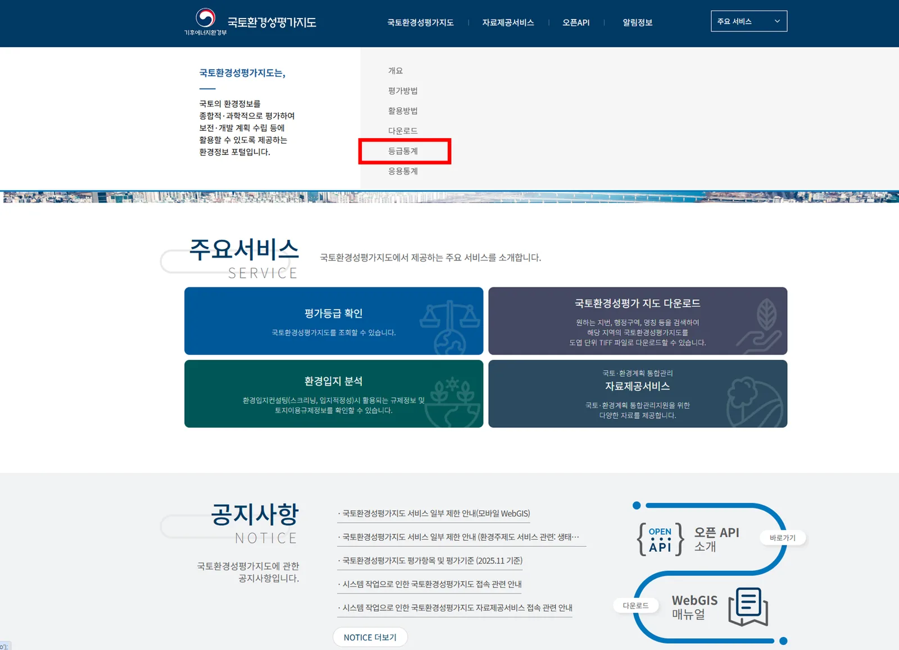
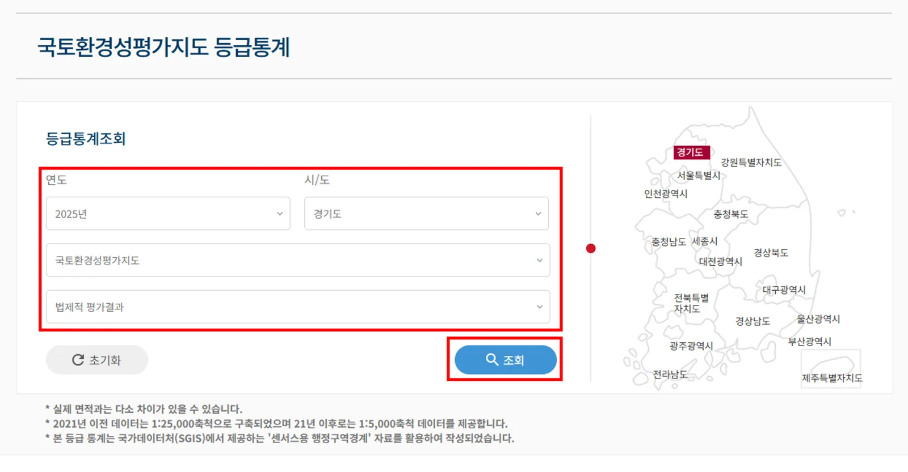
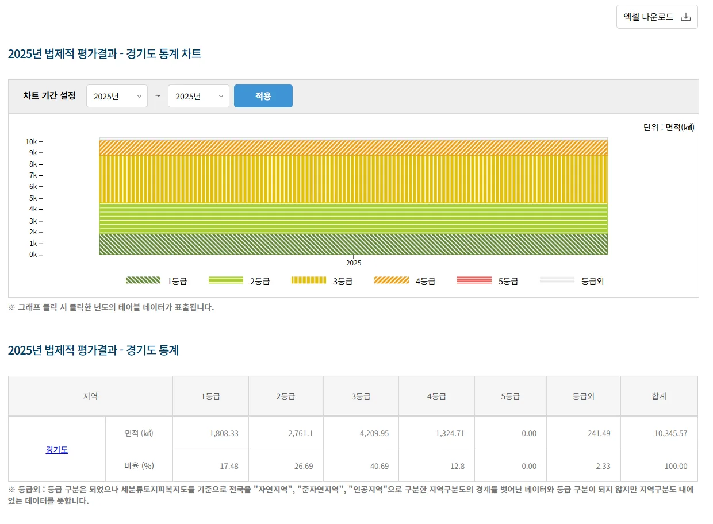

민원 대응 데이터 제시
- 개발행위 허가 시 환경적 불가 사유를 국가 표준 데이터를 활용한 시각적 근거를 시민에게 제시
- 국토환경성평가등급분석 → 지적분석을 통해 해당 필지(주소) 검색
- 해당 지점의 상세보기를 클릭하여 65개 법적 규제 항목과 8개 생태적 항목 중 어떤 요소가 등급에 영향을 주었는지 확인


민원 대응 근거 제시, 재난 취약지 분석, 경관 심의, 행정구역별 등급 통계 관리와 환경영향평가서 검토에 활용하는 방법입니다.






| 종류 | 대상 | 목적 |
|---|---|---|
| 환경영향평가 | 도시개발, 산업단지, 도로건설 등 | 사업 시행 전 환경영향 사전 조사·평가 |
| 전략환경영향평가 | 정책·계획·프로그램 수립 단계 | 개별사업보다 상위 단계에서 사전 예방 강화 |
| 소규모환경영향평가 | 환경영향평가 규모 이하 소규모 사업 | 난개발 우려 지역 입지 타당성 평가 |
제출된 등급 분석 결과 검증
| 검토 항목 | 확인 방법 |
|---|---|
| 등급별 면적·비율 일치 여부 | 분석 결과 표와 제출 자료 비교 |
| 분석 연도 적정성 | 평가서 작성 시점과 지도 갱신 연도 일치 여부 확인 |
| 좌표계 오류 여부 | SHP 분석 결과 위치가 실제와 일치하는지 확인 |
보호구역 누락 여부 확인